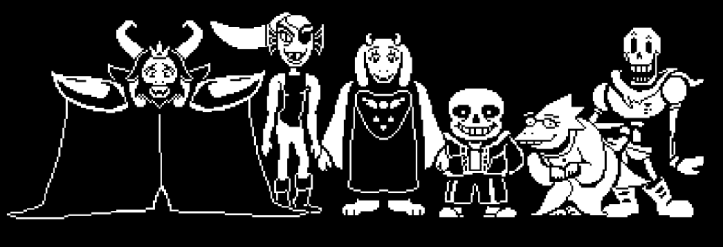

A Look At UNDERTALES’ Use of Leitmotifs
UNDERTALE is an indie role-playing game created by Toby Fox, released in 2015.
UNDERTALE quickly became possibly the most talked about game of the past decade, winning several awards within days after its release date.
Thanks to technology we’re seeing a huge boom of independent developers creating their own incredible games.
Fox managed to create an amazing soundtrack for UNDERTALE - a host of distinct tracks taking inspiration from several musical styles and many older games. The soundtrack also uses leitmotifs very effectively.
A leitmotif is a short, recurring musical phrase associated with a particular person, place or idea. A familiar example of this would be the Imperial March theme from Star Wars which when played, signifies Darth Vader is about to appear.
Once Upon a Time:
Start Menu:
UNDERTALES’ leitmotifs refer to certain characters, areas of the game and larger ideas or themes that run through the game. UNDERTALES’ main theme is considered to be the track Once Upon a Time which elicits a feeling of home. This simple and mutable motif can be heard in many of the game's tracks - for example the Start Menu track.
The use of this motif anchors a feeling of familiarity as the player traverses through many distinct areas of the game. All the emotions associated with that theme stay with the player and are re-purposed in the new context.
The use of this leitmotif lets the player know an area is safe. UNDERTALE’s soundtrack uses subtle hints to make players feel a familiarity in wildly different areas. The re-use of musical ideas in different variations and harmonies, etc, gives structure and a sense that you are listening to one large work of music rather than small disparate pieces. In the game, this makes the player feel areas are connected.
Other leitmotifs serve to express characters’ personalities and relationships. UNDERTALE is a game you can play entirely passively, without ever killing an enemy. Fox cleverly informs new player’s of this through the music for the Snow area of the game. Most new players will have slayed several monsters, not realising there was another option. In this area of the game the player reaches a friendly town with christmas trees, where the bosses are cute dogs.
Snowy:
So, UNDERTALE’s soundtrack is not just some nice background music to listen to while you play but an important part of the acclaimed video game.
Megalovania:
